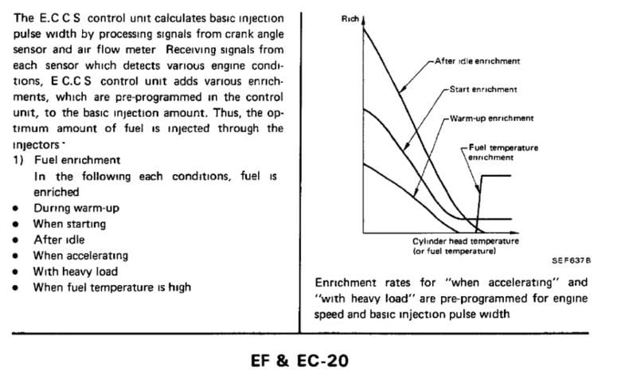

-
FUEL TEMPERATURE SENSOR BASICS
The "Fuel temperature Sensor" located on the "Fuel Pressure Regulator" attached to the fuel rails sends the current temperature of the fuel in the rails to the ECU to command certain operations depending on which model year you have. All model years have the "Fuel temperature Sensor", but the function changes between years.
1984 & 1985 (EARLY) MODEL YEARS
For the 1984 model year (and possibly early 1985 model years that might share the same ECU), as the fuel in the fuel rails gets warmer the "Fuel temperature Sensor" relays the temperature increase to the ECU, and the ECU adjusts the fuel map to "enrich" the currently referenced fuel cell to add more fuel.
Below is page EF & EC-20 from the 1984 FSM.
As stated, it shows that the "Fuel Temperature Sensor" increases the amount of fuel injected based on the resistance of the sensor (Refer to page EF & EC-53, which is not shown, for the temperature/resistance scale that the ECU sees based on "Fuel Temperature Sensor").
Note: The last point on the left side of this diagram is "When fuel temperature is high".
[attachment=2:2vfsi7uh]EF & EC-20 - 1984.jpg[/attachment:2vfsi7uh]
1985 (LATE) & LATER MODEL YEAR
For the 1985 and later model years, the FSM does not indicate an enrichment in fuel maps based on the resistance of the "Fuel Temperature Sensor".
Below is page EF & EC-22 from the 1985 FSM (every year after shows the same diagram/data).
It DOES NOT make any indication as to the Fuel Temperature Sensor contributing to the fuel map by adding an enrichment modifier to the current fuel map cell.
Note: Comparing this diagram to the one from 1984 model years, you will see "When fuel temperature is high" is missing. It is fair to assume that this feature was removed/revamped from later model years perhaps due to issues with the early model years, being the first of their kind.
[attachment=1:2vfsi7uh]EF & EC-22 - 1985.jpg[/attachment:2vfsi7uh]
SURGE-TANK INFORMATION
Below is page EF & EC-31 from the 1985 FSM (every year after shows the same diagram/data).
[attachment=0:2vfsi7uh]EF & EC-31 - 1985.jpg[/attachment:2vfsi7uh]
The surge tank is only equipped on 09/86 and later Z31's equipped with Turbos. (Needs verification).
It is located in the DRIVER SIDE wheel well, infront of the wheel itself-near the frame rail… By looking at where your MAF is, you will see two rounded vacuum hard-lines that come down from the strut tower area near your ignition coil and transistor, and ultimately make their way through the sheet metal just above the frame rail- and lead into the surge tank.
The purpose of the surge tank is to store "above atmospheric" manifold pressure via a one way check-valve connected to a vacuum line that goes to the intake manifold. When the pressure in the intake manifold is above atmospheric pressure, some of that boost pressure is stored in the surge tank for later use. The check valve prevents pressure from coming back out of the vacuum line. The tank may have some sort of relief valve to vent off excess pressure above a limit set from factory.
This pressure stored in the surge-tank is not released until the car is shut off and re-started. If the "Fuel Temperature Sensor" tells the ECU that the current temperature in the fuel rails is above 40*C or 104*F, the "Pressure Regulator Control Solenoid Valve" that the outlet vacuum line from the surge-tank is hooked up to is activated. This causes the pressure that is in the surge-tank to be routed through the "Pressure Regulator Control Solenoid Valve", and to the "Fuel Pressure Regulator" for a certain amount of time based on the current fuel temperature- thus increasing fuel pressure during hot starts. -
Nice work!
Do you have any pictures of this said surge tank. Never seen one on either of my turbo cars that I scrapped.Denis Gagné
aka VGwagon
GM specialized licensed technician
69 510 VG30 powered wagon
73 240z shell VG30et in progress
86 300zx NA2T -
Don't remember anything in the driver side fender well of my 86T. Pix of said part?
1986 300ZX Turbo…sold
1990 Skyline GT-R…new money pit
2014 Juke Nismo RS 6-speed…daily -
It is in in the D/S fender of 88t and up cars, I would imagine anything from 4/87t and up has it as well. I have never seen one in an NA, but that is because I have never worked on the 4/87 and up NA.Hmmm, Whats next?
Full Size Bronco, smashing shit.
84ZXT -
[quote]michaelp wrote:Strange. Try looking behind the inner fender inside the wheel well, in the area of the side marker plug. Every 88 and up turbo car I have worked on has it, thats around 6 of them. FYI I couldnt find it in the FSM with a brief look.Originally posted by shromyHmmm, Whats next?
Full Size Bronco, smashing shit.
84ZXT -
edited first post. -
K, allow me to set something straight in this thread (and any future FYI's I write form here on in).
People ask "what does this thing do" constantly. And I explained/outlined what it does "for your information".
I can't answer all the questions because both cars I have are equipped with it, and missing information is a matter of searching for it on my end if I decide it's vital, and on your end if you really need to know.
Basically, if your car doesn't have a surge tank, and it does not seem as though a surge tank ever came on your car, and the pressure regulator solenoid is no where to be found- then this thread is negligible.
There are so many split-year configurations for these cars and trim levels that to list them all is something I'm not prepared to do because in reality- it doesn't make a difference to anyone with a set of eyeballs. If you car has these apparatuses, then read along. If you don't know where these things are located or can't find them using the mentioned locations- assume your car doesn't have them, and add that to your mental list of surge-tank non-equipped vehicles (which will surely change when someone mentions that they in fact did have a surge-tank on their car of the same month/year/trim for some stupid nissan reason, and you guys go and mix up your information and bitch at each other about who's right or left).
Cool? -
No one seems to be bitching, Betty. Just trying to find the cars that do and do not have the unit installed. Fairly sure I told you its use and lack there of a year ago. I for one am trying to see if the NA cars had them or not. I have never worked on a 4/87 and up NA. I know non of the pre 4/87 cars had them.Hmmm, Whats next?
Full Size Bronco, smashing shit.
84ZXT -
A certain someone was questioning its existence because he's never seen one before.
All i'm doing is posting what the Fuel Temp Sensor does. If you don't have a surge tank- then you don't need to worry about it, I guess? I don't recall if you explained this to me before. If you did, thanks- but other people have asked about it since then and the answer was never really explained in the same or more depth as the FSM (which people fail to check FIRST).
Whatev. If I'm going to post anymore FYI's I'm not going to reply within unless I see fit. -
keep 1st post, delete everything else, lock thread.
well done careless!

1988 300zxt. gt35, stance, etc. Wheels: Varrstoen ES2 18x9.5 et-13 225/40. 18x10.5 et0 245/40
1990 jetta vr6'd -
viewtopic.php?f=1&t=24090
No, no full write up. Same info you posted about it. Which is not in the fsm so far. No mention what so ever of the part that is on the cars. It is there, it exists, Mikep found it when he looked. Willing to bet they all have them, after certain build date. Good work Buddy .
Hmmm, Whats next?
.
Hmmm, Whats next?
Full Size Bronco, smashing shit.
84ZXT -
When I read this I knew I recalled reading that the fuel temp sensor could trigger enrichment. As here in the '84 FSM

So, independent of the possible surge tank/pressure regulator it may still do something year and split-year dependent.
That said thanks to OP for posting this, I now understand a difference between my '84 future project and '86 current project that I wasn't aware of. -
What? A bunch of things to throw in the nearest garbage can? Engineers??????????????????wtf??????????????JeffSly wrote: When I read this I knew I recalled reading that the fuel temp sensor could trigger enrichment. As here in the '84 FSM
So, independent of the possible surge tank/pressure regulator it may still do something year and split-year dependent.
That said thanks to OP for posting this, I now understand a difference between my '84 future project and '86 current project that I wasn't aware of.Hmmm, Whats next?
Full Size Bronco, smashing shit.
84ZXT -
Are you kidding me? This post is an FYI of what the fuel temp sensor does or doesn't do. Since it didn't just say, "It senses fuel temp" I'd consider it relevent that the '84 ECCS uses the number…shromy wrote: ??????????????????wtf?????????????? -
Well I'm only adding to this because JeffSly uncovered an important issue.
see first post.

Copyright © 2006–. All rights reserved. Privacy Policy